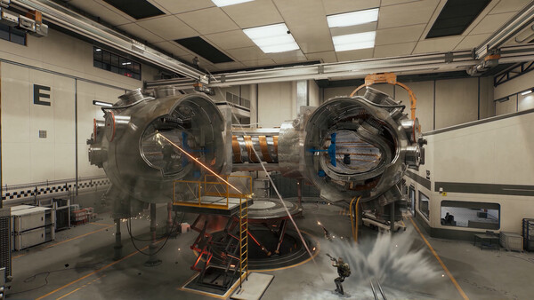

先定战线
先选模式，再用枪械类别、具体枪名、关键词或标签缩小范围，例如高稳定性、后座力稳、远程作战或近战适用。
攻略 04 / 在线工具
Delta Forge 是一个可检索的三角洲行动改枪工作台。你可以按战场、枪械类别、具体枪名或作战意图缩小方案范围，再查看取舍，最后复制改枪码。

工具把 烽火地带 和 全面战场 分开，然后支持按枪械类型、枪名、搜索词和标签继续筛选。同一把枪，在“活着带出物资”和“压制远处战线”之间，往往需要不同的取舍。
烽火地带 / 全面战场
步枪、冲锋枪、狙击枪、机枪等。
稳定、压制、远程、近战等。
站内数据 / 本地索引
下面的方案已经放进本站，可以直接按模式、枪械类别、枪名、标签或配件搜索。
没有匹配方案。换个模式、标签或关键词试试。
先选模式，再用枪械类别、具体枪名、关键词或标签缩小范围，例如高稳定性、后座力稳、远程作战或近战适用。
打开方案后，查看枪械、标签、成本、属性和配件列表。把它当作起点，不要把它当成每个版本、每个玩家都最优的答案。
选定方案后复制改枪码。最好把改枪码和方案名字一起保存，版本或目录变化后更容易进行对比。
本页已经内置一份观察日期明确的 205 条方案快照，包括筛选字段、成本、属性、配件和改枪码。方案可能随更新变化，所以资料日志仍保留外部工具链接，用于后续刷新和对比。外部页面把这批方案标注为 official-HQ 数据集合；本手册不把这个标注扩展成对每个方案的官方背书。
资料：Delta Forge 改枪工具 ↗ · HQ 参考路径 ↗ · 完整资料日志 ↗